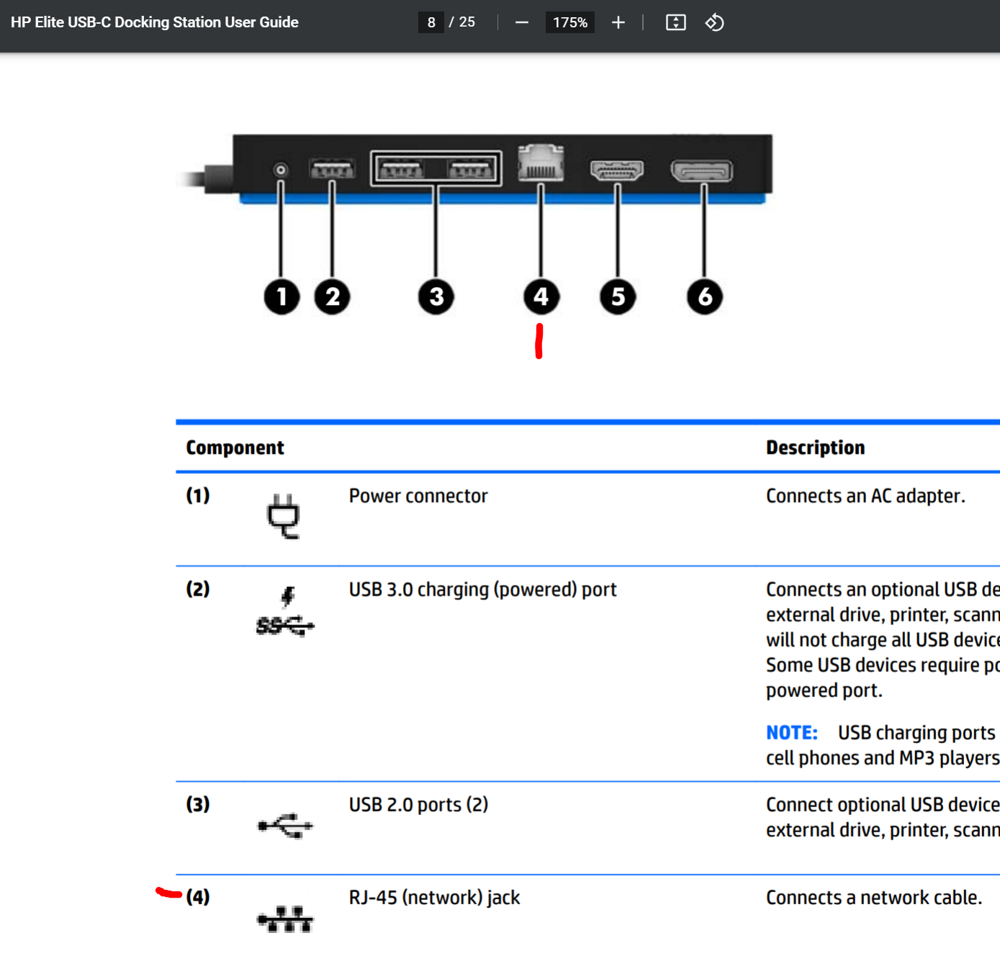
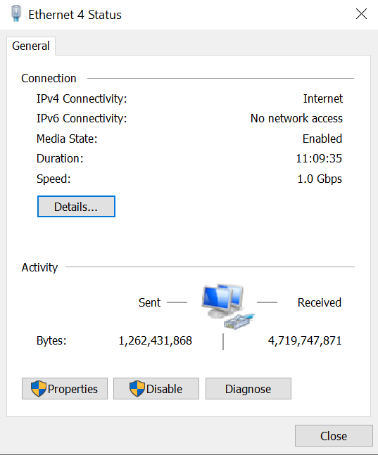

Wired network media often use copper cables as the media. Briefly explain the purpose of gold-plating the contacts on the ends of an Ethernet cable RJ45 plug. Note: do not only rely on the book for the answer. Check out Wikipedia! Gold Plating
(50) 1. What is the purpose of gold-plating the contacts on an Ethernet cable?
Do Hands-On Project 4-3, using the patch cable connected to the USB-C dock at your workstation. This exercise uses a wired connection, it cannot be done wirelessly.
In step 4, you can only view the indicator lights on the HP-USB-C dock. You do not have access to the network switch, which is locked away in a secure network closet.
Note there are two LED indicator lights on the network port. These lights typically indicate data activity (left light) and port speed (right light). The color of these lights (green, amber, off/none) can vary between manufacturers.
The USB-C dock mounted to the back of the Somsen 301 student workstation landscape monitor is either a HP Elite USB-C Dock, or HP Elite USB-C Dock G4. Both contain Gigabit Ethernet ports. 
Examine the wired Ethernet connection properties, the USB-C dock Ethernet connection, and answer the following questions. 
(50) 2. What Speed is your computer wired connection to the USB-C dock?: Work with a partner, or individually, to determine the purpose of each of the two LED indicator lights on the USB-C dock. Facing the RJ-45 port on the dock, write your answer below. (50) 3. Purpose of USB-C dock left LED indicator light: (50) 4. Current status of USB-C dock left indicator light. Example-off, constant green, blinking green... (50) 5. Purpose of USB-C dock right LED indicator light: (50) 6. Current status of USB-C dock right indicator light. Example-off, constant green, blinking green...
The Packet Tracer Labs are accessible from MindTap in two ways:
The files needed for Packet Tracer labs are available on the Cengage Website, in Professor Paulson's OneDrive ReadOnly folder for this course, or in the WSU network drive ReadOnly folder for this course. You must save a copy of these files to your folder.
Follow the instructions in Packet Tracer Lab 4-1 to learn the different uses of straight-through and crossover cables. When done, answer the questions below. For background information please refer to the book, and this article on Ethernet crossover cables.
(50) 7. In step 4, briefly explain what happens when you use a Cross-Over cable to connect Switch2 and Router1. In other words, can you establish a connection between the devices?
(50) 8. In step 5, briefly explain what happens when you use a Straight-Through cable to connect Switch1 and Switch2. In other words, can you establish a connection between the devices?
(50) 9. In step 6, briefly explain what happens when you use a Cross-Over cable to connect Switch1 and Switch2. In other words, can you establish a connection between the devices?
(50) 10. After completing step 8, briefly explain what type of cable- Straight-Through or Cross-Over is needed to connect two computers together. In other words, how do you establish a connection between the computers?
Follow the instructions in Packet Tracer Lab 4-2 to learn to connect devices using fiber-optic cables. When done, answer the questions below. For background information please refer to the book, and this article on Fiber-optic cables.
(50) 11. After completing step 3, briefly explain why a fiber-optic cable has two ports to connect devices?
(50) 12. After completing step 4, briefly list two reasons to choose a fiber-optic cable over a copper cable. Please realize that fiber-optic cable is more expensive to deal with.
Follow the instructions in Packet Tracer Lab 4-3 to learn to communicate between a PC and a Cisco router using a rollover cable. When done, answer the questions below. For background information please refer to the book, and this article on Rollover cable.
(50) 13. After completing step 3, briefly explain the purpose of a rollover cable. Is a rollover cable used to transfer data between devices like a copper or fiber-optic cable?
(100) 14. After completing step 5 make a screen shot of the Packet Tracer PC0 Terminal Configuration window. Refer to figure 4-23. Save the screen shot as "Ex1" in your ' ' folder. You will be combining screen shots from several exercises at the end of this assignment, just as you did in Formative00-PDF File Creation.
Use a web browser to verify that you have published your website to https://classes.winona.edu/... Check that your name, StarID, email, class, semester, section and all of your answers are correct and visible. From the menu choose File>Print... and using "Microsoft Print to PDF" save a copy of this assignment as a .pdf file in your ' ' folder.
(50) 15. Save your file 'WebPage.pdf' to the ' ' folder.
Create one .pdf (portable document format) file from the screen shots that you have taken by following these steps.
(50) 16. Save your file 'ScreenShots.pdf' in your ' ' folder.
Use PDFill to merge the WebPage.pdf file with the ScreenShots.pdf file, and save it as 'Summative04.pdf' in your ' ' folder.
(50) 17. Upload your file 'Summative04.pdf' to the D2L 'Summative04' Assignment folder.
Use a browser to view your completed and published website at: https://classes.winona.edu/... Ensure that you have linked this assignment on your home page. Note that your screen shots do not have to be completed to perform this step.